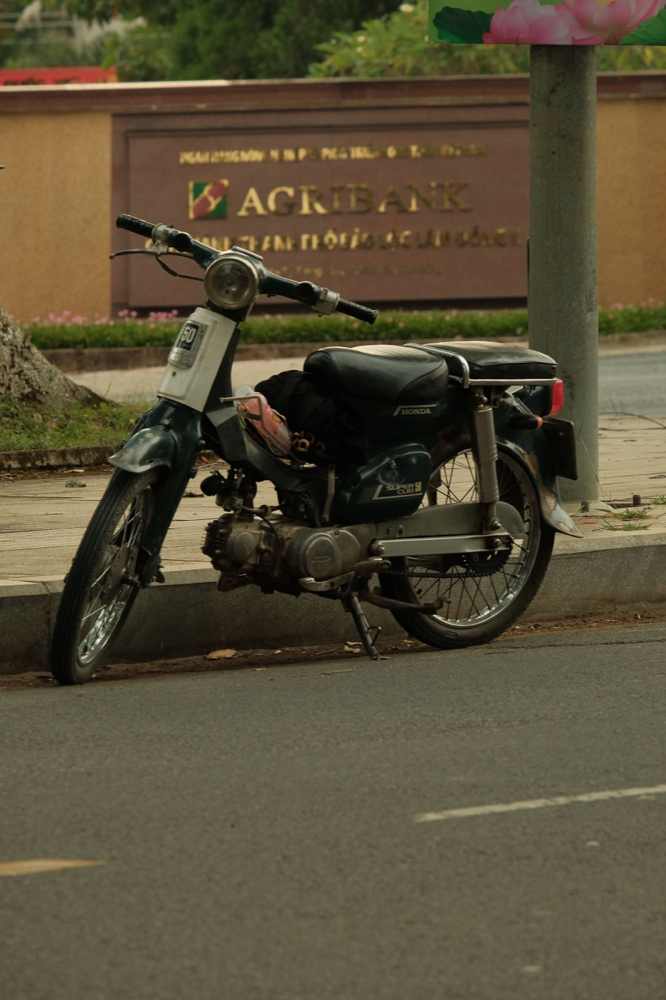

오토바이 배터리가 약할 때: 증상과 대처법

배터리는 아무 예고 없이 완전히 멈추는 경우가 드뭅니다. 보통 먼저 스타터 소리가 달라지고, 라이트가 약해지고, 세워둔 뒤 시동이 오래 걸립니다. 이런 신호를 미리 알아채면 꼼짝 않는 오토바이와 남겨지지 않고 정비소까지 차분히 갈 수 있습니다.
주요 증상
- 스타터가 평소보다 엔진을 느리게 돌린다;
- 버튼을 누르면 딸깍 소리만 나고 시동이 안 걸린다;
- 시동할 때 계기판이나 전조등이 눈에 띄게 어두워진다;
- 경적이 약하고 방향지시등이 이상하게 깜빡인다;
- 주행 후보다 밤새 세워둔 뒤에 문제가 더 심하다;
- 셀 스타터는 불안정한데 킥 스타터로는 시동이 걸린다.
증상 하나로 배터리 탓이라고 단정할 수 없습니다. 단자 접촉 불량, 스타터 고장, 퓨즈, 충전 문제도 비슷하게 나타납니다.
분해 없이 확인할 것
엔진 킬 스위치가 운행 위치인지, 사이드 스탠드가 올라가 있는지, 브레이크 레버를 잡았는지, 연료가 있는지 확인하세요. 계기판이 켜지는지, 시동 시 밝기가 변하는지 보세요. 스타터 버튼을 계속 누르지 마세요: 시스템이 과열되지 않도록 짧게 시도하고 쉬세요.

계속 타도 될까
엔진이 이미 정상적으로 돌고, 라이트가 안정적이고, 과열 냄새가 없다면 여러 번 멈추는 것보다 바로 정비소까지 짧게 가는 것이 보통 현명합니다. 하지만 꺼진 엔진은 다시 안 걸릴 수 있습니다. 계기판이 깜빡이거나, 라이트가 나가거나, 배선이 뜨거워지거나, 타는 냄새가 나면 멈추고 도움을 요청하세요.
점프 시동과 충전
극성을 잘못 연결하면 전자장치가 손상될 수 있습니다. 해당 모델의 전압과 연결 순서를 모른다면 정체 모를 자동차 충전기를 연결하거나 케이블로 실험하지 마세요. 정비사에게 배터리 전압과 충전 계통 점검을 맡기는 것이 안전합니다.
새 배터리도 방전되는 이유
- 오랫동안 타지 않고 세워 두었다;
- 라이트나 추가 장치가 켜져 있었다;
- 휴대폰 거치대와 액세서리 배선이 잘못됐다;
- 단자가 느슨하거나 산화됐다;
- 충전 계통이 전력을 채우지 못한다;
- 아주 짧은 주행이 잦아 충전될 시간이 없다.
정비소에 요청할 점검
“배터리가 나빠요”라는 말만이 아니라, 정지 상태·부하 상태·엔진 작동 중 전압 측정이 필요합니다. 정비사는 단자, 누전, 퓨즈, 충전도 확인합니다. 원인을 고치지 않고 배터리만 바꾸면 며칠 뒤 같은 문제가 생길 수 있습니다.
예방
제자리에서 몇 분 시동 거는 것보다 꾸준히 타는 것이 더 좋습니다. 오래 떠나기 전에는 보관 준비를 하고, 돌아온 직후 바로 장거리 계획은 세우지 마세요. 스타터 소리 변화에 주의하세요 — 보통 문제가 심각해지기 전에 주인이 먼저 듣습니다.
짧은 결론
느린 스타터, 어두운 라이트, 딸깍 소리는 시동을 끝없이 시도할 이유가 아니라 배터리와 충전 계통을 점검할 이유입니다. 이미 도로에서 멈췄다면 고장 났을 때 대처법을, 오래 세워둘 예정이라면 오토바이를 한 달 맡겨둘 때를 읽어보세요.